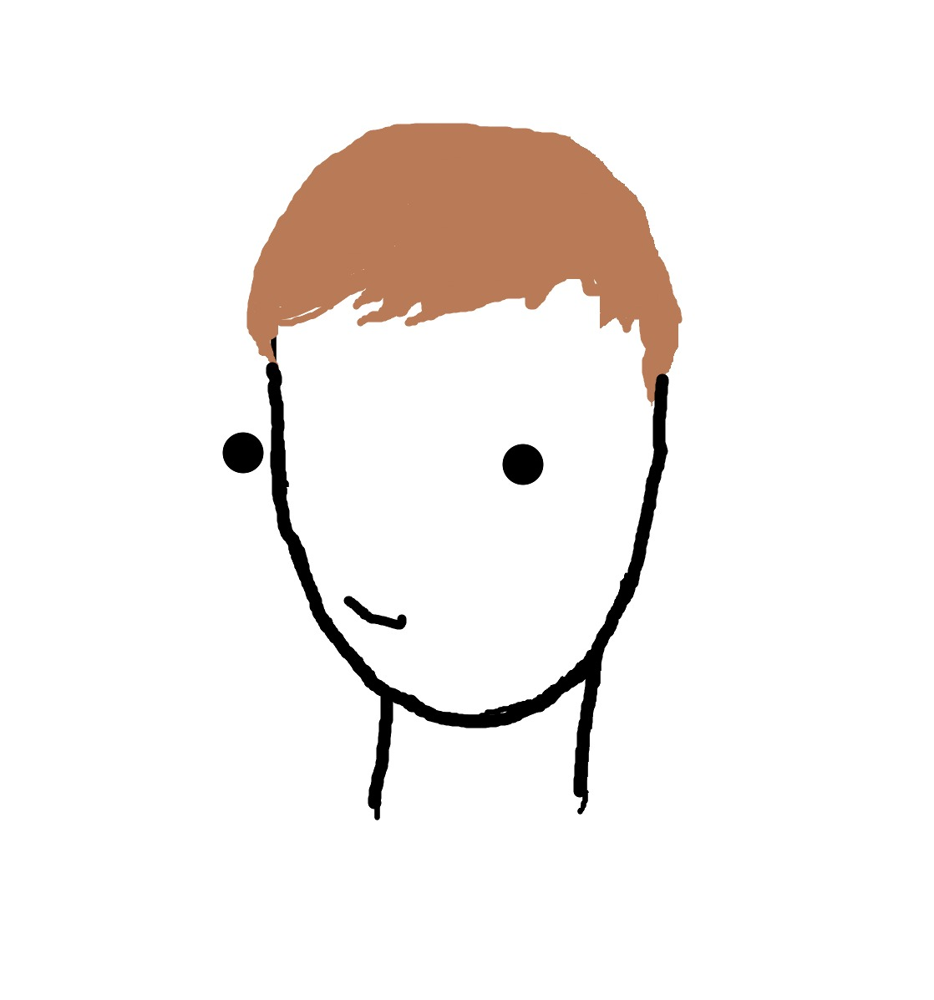

Sobre BANANAP
El Projecte
BANANAP és una experiència audiovisual interactiva inspirada en Patatap. Mitjançant un controlador físic desenvolupat amb Arduino (equipats amb faders i botons), l'usuari pot explorar i crear patrons rítmics, gràfics geomètrics i modificacions de so en temps real. El projecte explora la relació entre el tacte, la vista i l'oïda, convidant a l'experimentació lúdica de la música digital.
La Història
Darrere dels 5 minijocs s'hi amaga la història d'un simpàtic mono que, en realitat, és un espia secret en ple entrenament! Tot comença quan l'has de descobrir amagat rere les plantes (una tècnica bàsica de camuflatge). Després, s'entrena en atac de precisió fent caure els plàtans de les palmeres. A mesura que cauen, posa a prova els reflexos d'agent atrapant-los al vol. Un cop els té, pràctica moviments tàctics pelant-los amb compte i, finalment, la missió culmina amb un entrenament de tir seqüencial d'alta precisió per aconseguir la gran victòria final.
L'Equip

Biel Mariné
Programació & Hardware
Desenvolupa la interfície i integra l'Arduino; munta el hardware (Arduino i controladors).

Adrià Guerrero
Il·lustració & Hardware
Dissenya i produeix les il·lustracions del projecte; munta el hardware (Soldadures).

Martí Gay
Art Direction & Branding
Direcció d'art i branding: defineix la identitat visual, la paleta de colors, les guies d'estil per garantir coherència i dinamisme visual.

Fabià Pérez
Edició de vídeo
Videografia.